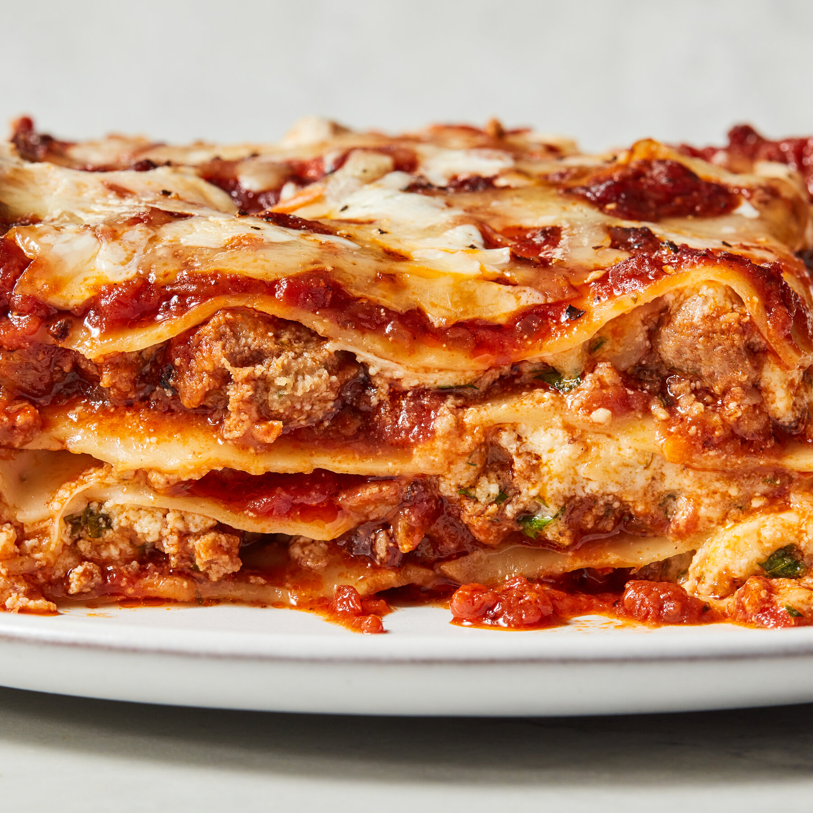

For the sauce, heat ½ cup oil in a large heavy Dutch oven or kettle over low heat. Add the onions, minced garlic and pancetta, and cook, stirring, for 10 minutes, until the onions are wilted. Season liberally with salt and pepper. Raise heat slightly, add the wine and cook until it is mostly reduced, about 20 minutes. Crush the tomatoes into the pan, and add their juice. Add the tomato paste and 2 cups lukewarm water. Simmer for 1 hour.
Combine the sirloin, cheese and eggs in a large bowl. Chop the parsley with the whole garlic until fine, then stir into the beef mixture. Season lavishly with salt and pepper. Using your hands, mix until all the ingredients are well blended. Shape into meatballs and set aside.
Heat the remaining oil in a large skillet over medium-high heat. Dust the meatballs lightly with flour, shaking off excess, and lay into the hot oil. Brown the meatballs on all sides (do not cook through) and transfer to the sauce.
In a clean skillet, brown the sausages over medium-high heat. Transfer to the sauce. Simmer 1½ hours.
Heat the oven to 350 degrees. In a large bowl, combine the ricotta, eggs, Pecorino Romano, parsley and all but 1 cup of the mozzarella. Season well with salt and pepper. Mix thoroughly.
Remove the meatballs and sausage from the sauce, and set aside to cool slightly, then chop coarsely. Spoon a thick layer of sauce into the bottom of a 9-by-12-inch lasagna pan. Cover with a layer of noodles. Spoon more sauce on top, then add a third of the meat and a third of the cheese mixture. Repeat for 2 more layers, using all the meat and cheese. Top with a layer of noodles, and cover with the remaining sauce. Sprinkle reserved mozzarella evenly over the top. Bake 30 minutes. Let stand 10 minutes before serving.